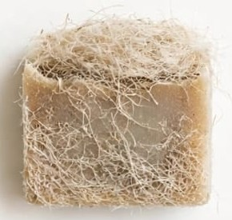
Clásicos
Exfoliante de lufa
Barra exfoliante con lufa
12 barras de jabón hechas a mano, de distintas texturas y colores

Barra exfoliante con lufa
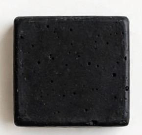
Barra negra de carbón activado
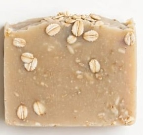
Barra con hojuelas de avena

Barra en tres colores
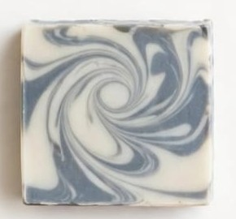
Barra con diseño marmoleado
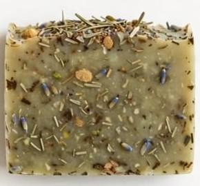
Barra con hierbas naturales
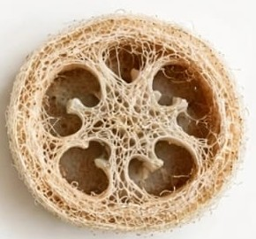
Jabón con loofha natural
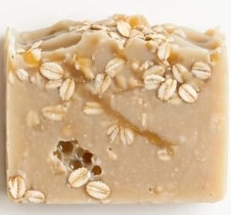
Barra de arroz
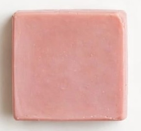
Barra de arcilla rosa
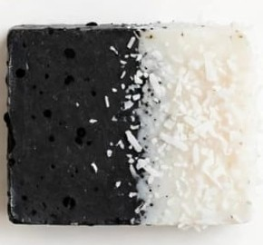
Barra de carbón con coco
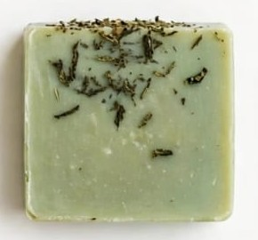
Barra de té verde
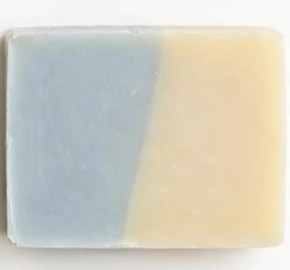
Barra en dos colores